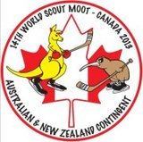

World Moot Canada, Brad Peters's Experience

The 14th World Scout Moot, at Awacamenj Mino Scout Camp in Low, Quebec, Canada might have missed it's goal of 5,000 Rovers from 100 Countries, but the 139(?)-strong Australian & New Zealand Contingent were some of the 2,500 Rover-aged Scouts from 81 countries who succeeded in making millions of memories.
As well as the Rovers, the Contingent included 22(?) International Service Team Members, lovingly known as ISTs. These Leaders and Booted Rovers worked hard in all areas of the Moot, from security and warehouse, to media and catering, to subcamp team and line leaders, for our benefit, and the Moot wouldn’t have been possible without them.
For 54 of us, the adventure began in New York City on August 29th, when we met up to begin our Pre-tour, hitting the big sights in New York, Philadelphia, Washington DC and the Amish Community of Intercourse, Pennsylvania, before heading up to Niagara Falls, Toronto and finally Ottawa in Canada, where we met the rest of the Contingent and where the Moot would begin.
Some highlights of the pretour included the Statue of Liberty in New York, running up the "Rocky Steps" outside the Philadelphia Museum of Art, visiting the mind-bogglingly huge Arlington National Cemetery and the Smithsonian Institution in Washington DC, the entire visit to the Amish community in Pennsylvania, Niagara Falls, the Hockey Hall of Fame and CN Tower in Toronto, not to mention the experiences along the way, like the way Steveo the Tour Director pronounced "RO-Verrrs!" when trying to get our attention and how deliriously happy he was when someone showed him that we still have the "raise your arm, shut your mouth" reflex ingrained in us from our time as Cub Scouts - he even said he was going to try and get his usual Seniors’ tours using this system too, but I don’t like his chances.
But, to get back to the main event: the Governor-General and Chief Scout of Canada, David Johnston CC, opened the Moot in front of the Canadian Houses of Parliament before we met up with our international Patrols and got bussed out to Scout Camp Awacamenj Mino – in the iconic yellow primary school buses! We got to the site and had the rest of the day to set up and get to know each other, as the patrols had been designed to introduce us all to different nationalities.
Each Patrol had been created from between 6 and 8 Rovers who had selected the same Urban Experience. There were three options for location, Toronto, Montreal and Quebec City – all of which were several hours driving time from the site in those yellow schoolbuses from the campsite. We were offered four choices of program - the Life Path, which focused on WOSM's Messengers of Peace program; the Ecoresponsible path, which focused on environmental projects; the Cultural path, which exposed us to the First Nations people of Canada; and the Adventure path, which introduced participants to the Shelterbox disaster relief scheme. Although to be honest, while the cities and programs were great, one of the most important parts of everyone's Urban Experience was the opportunity for hot showers and and proper meals.
Cultural Day was a big highlight of the Moot, and one of the few days that the entire Moot was on site. We started out in our Sub-Camps talking about our different cultures and teaching each other different words and phrases in our languages and dialects. After lunch, we headed to the Contingent Area, where each Contingent was given it's own tent to decorate and inhabit during the Moot. National songs were sung and chants were shouted, and I said "grouse" more on this one day than I have in the rest of my life.
Just about every Contingent had arranged for a national dish of some kind - we went with a sausage sizzle (although with much more upmarket sausages than we'd use at home) and the Kiwis brought along Minties and some kind of chocolate-covered pineapple lollie. This was off-budget though, as we'd only found the Barbecue after we'd arrived at the Moot. So to recover the cost, we introduced the rest of the world to the concept of a meat tray raffle. To help them understand what the tickets we were selling were for, we had to call it a “meat lottery” though, which just sounded so wrong.
There were plenty of onsite activities as well, from Scouting favourites like hiking, rock climbing, abseiling and water activities to geocaching, visits to the Museums of Civilizations and War, the Omega Park open range zoo, couch rally (where you went around Ottawa trying to take photos of your patrol and couch in as many different places as possible) the Global Development Village, where we completed activities that helped us learn about Land Mines, Child Labour, Road Safety and many more.
Sport was big part of the Moot, the organisers had even provided two soccer fields, which we reappropriated to take on the UK and Ireland Contingents in Rugby - although it ended up being the Australian & NZ Contingent, plus a Namibian, a couple of Frenchmen and even a little Danish girl who I was sure was going to get picked up and run to the end of the field for another try if she ever got the ball.
We also played the UK in Cricket, although that was a straight Contingent-on-Contingent affair. Bay 13 was more intent on heckling our team and umpire, but the other spectators seemed to enjoy their antics as well as the game. The UK was much more invested in both games than we were, holding tryouts and practices, while we had to delay both games slightly while we waited for 15 and 11 people to show up respectively, and in the rugby had about a quarter of the team playing without shoes (in the Cricket match our entire team played barefoot.) This was reflected in the scores - we went down by 5 tries to none in Rugby, but only lost the Cricket by about an over.
It was interesting to take part in a World event, as the Scouts du Canada ran the Moot in a very different way than we run our Rover events here in Australia – I’ll never complain about Rover Adjusted Time again. My Patrol had a Brazillian, two Mexicans, a Brit, a Dutchman, a Venezuelan and a Fin (who was from the Swedish-speaking minority) meaning we had native speakers of English, Spanish, Portuguese, Dutch and Swedish. Luckily for Sophie and I, the others had a working knowledge of English, and we didn't have to resort to interpretive dance too often, but language problems did crop up from time to time, particularly as we didn't have anyone who was very good at French, which made our time in Quebec City a bit of a challenge.
When the Moot ended, many of us unfortunately had to go straight home – which was sad, but at least it meant that we wouldn’t have to see any more celery. 35 Rovers continued on to the Post-tour around Cuba, while others used the opportunity for independent travelling, some for just a few days, some for a couple of weeks. A few lucky Rovers were able to organise longer trips to places like Europe and South America.
Thanks again to our Contingent Management Team - Contingent Leaders Peter Favelle (1st Epping RC, NSW - Australia) and Sonia Rawlings-Blackmore (NZ) Deputy Contingent Leader & Travel Coordinator Erin Slaverio (Brush Park RC, NSW) Applications & Finance Officer Nicky Strachan (Boss Hurst RC, 1st Otway Forresters, VIC) Rover Advisor David Cossart (ACC Training & Development and Branch RA, ACT Branch) as well the rest of the Contingent Team, our hosts, Scouts du Canada, the Moot Organising Committee and all the International Service Team members who made our Moot experience possible.
The next World Moot will be held in Iceland during July 2017, and many of us are already making plans to be there. If you think that you might want to join us, as a Rover or as IST, check out the website: www.worldscoutmoot.is.
Brad Peters (Birubi RC, 1st Wantirna South) does stuff for Mudbash and some Moots